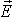

|
Любая электрическая цепь состоит из: - приёмников (преобразователей энергии, называемых иногда нагрузкой) - вспомогательных элементов Появление электрического тока и напряжений в электрической
цепи невозможно без источников электрической энергии, которые преобразуют механическую,
тепловую, световую и другие виды энергии в электрическую. При этом в источнике
т. н. сторонними ЭДС создаётся электрическое поле с напряжённостью ,
которое, действуя на заряженные частицы, разделяет их таким образом, что на одном
зажиме (положительном, обозначаемом знаком "+") источника скапливаются
положительные заряды, а на другом (обозначаемом знаком "-") - отрицательные
(электроны). |